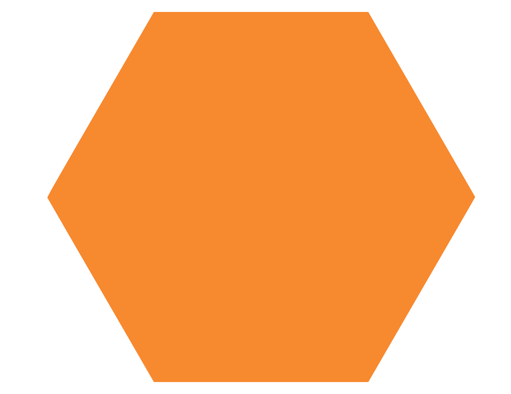
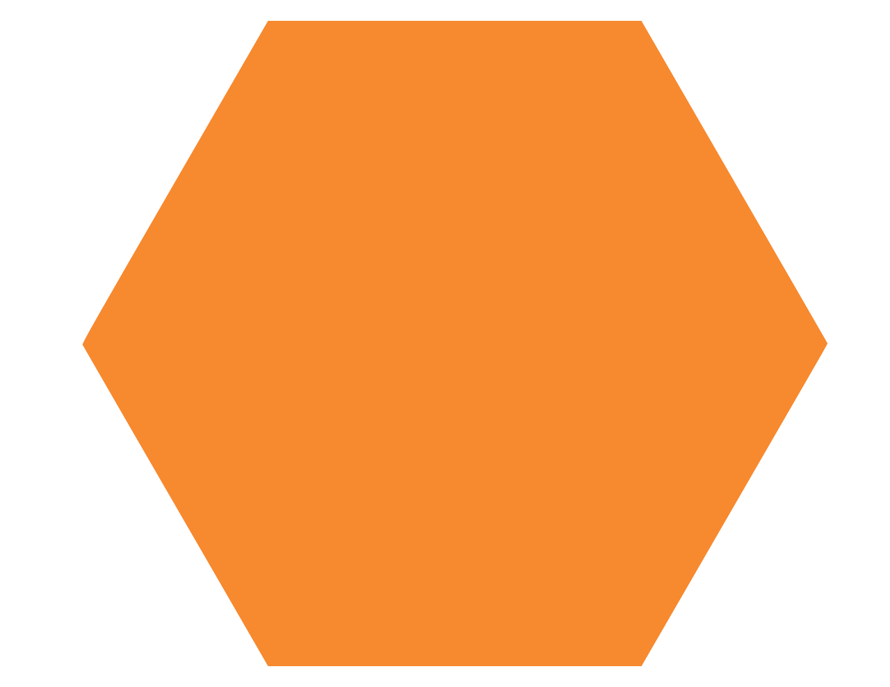
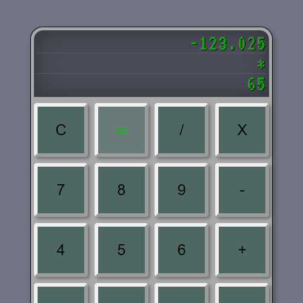

")
O mnie
Nazywam się Dariusz Bartyzel. Jestem absolwentem Uniwersytetu Ekonomicznego w Krakowie, gdzie ukończyłem kierunek Finanse i rachunkowość. Po kilku latach w zawodzie doszedłem do wniosku, że brakuje mi satysfakcji z wykonywanej pracy. Wiedziałem, że nie jest to coś co chciałbym robić przez resztę swojego życia. Zastanawiając się jaką ścieżkę dalej obrać, nagle nadarzyła się okazja wykonania pierwszej strony internetowej na zlecenie, co okazało się na tyle fascynujące, iż zaowocowało podjęciem decyzji o przebranżowieniu. Obecnie nadszedł czas, w którym chciałbym przyspieszyć swój rozwój poprzez pracę w realnym środowisku, gdyż żadne źródła nauki nie są w stanie tego zastąpić. Ze względu na bycie początkującym, byłbym niezmiernie wdzięczny za możliwość podjęcia praktyk lub stażu, które to pchnęłyby moją wiedzę i doświadczenie na kolejny poziom:)
 

Technologie
Wszystko to z czego korzystałem w większym lub mniejszym stopniu podczas nauki i tworzenia projektów
HTML
CSS
JS
REACT
SASS
Narzędzia
WEBPACK
GIT
Metodologie
BEM
Powyższe technologie są jedynie wstępem do świata front-endu, a ja jako początkujący amator dopiero w nim raczkuję, jednakże wciąż staram się utrwalać i poszerzać zdobytą wiedzę, aby móc swobodniej i skuteczniej stosować ją w praktyce. W najbliższym czasie planuję bardziej zagłębić się w temat Reacta (m.in. zastosować w praktyce Reduxa), testy, poznać pierwszą bazę danych (prawdopodobnie MongoDB) oraz jej obsługę.
Projekty
RSS App
Czytnik RSS stworzony za pomocą Reacta (Hooks, React Router). Pozwala wklejać odpowiedni adres URL i odczytywać jego zawartość. Nazwane adresy zapisywane są obecnie w localStorage. Projekt planuję rozbudować.
Portfolio
Portfolio na którym się obecnie znajdujemy:) Wykorzystany czysty Javascript.
Minecraft

Strona zawierająca opis oraz zasady gry na serwerze Minecraft. Stworzona dla osób chcących rozpocząć wspólną zabawę w grze.
The Space Facts
Projekt wykorzystujący API NASA, w celu codziennej aktualizacji "Astronomy Picture of the Day" (często fotografia lub ilustracja obiektów czy zjawisk występujących w przestrzeni). Umożliwia wybranie daty obrazka oraz sprawdzenie temperatury i prędkości wiatru na Marsie. Napisany w Javascript.
Calculator
Kalkulator napisany w React. Na początku z użyciem class components, później zmiana na functional i Hooks:)
NOMA Architekci

Strona dla biura architektonicznego. Napisana podczas przyswajania wiedzy z HTML i CSS. O Javascript nie wiedziałem jeszcze wówczas wiele, dlatego wykorzystane zostały tutaj zewnętrzne źródła:)
Biuro Rachunkowe
Strona dla biura rachunkowego. Podobnie jak powyższy projekt napisana podczas nauki HTML i CSS.
Game Of Colors

Prosta gra "Memory". Pierwsze samodzielne podejście do Javascriptu. Napisana dla ćwiczeń i utrwalenia zdobytej wiedzy.